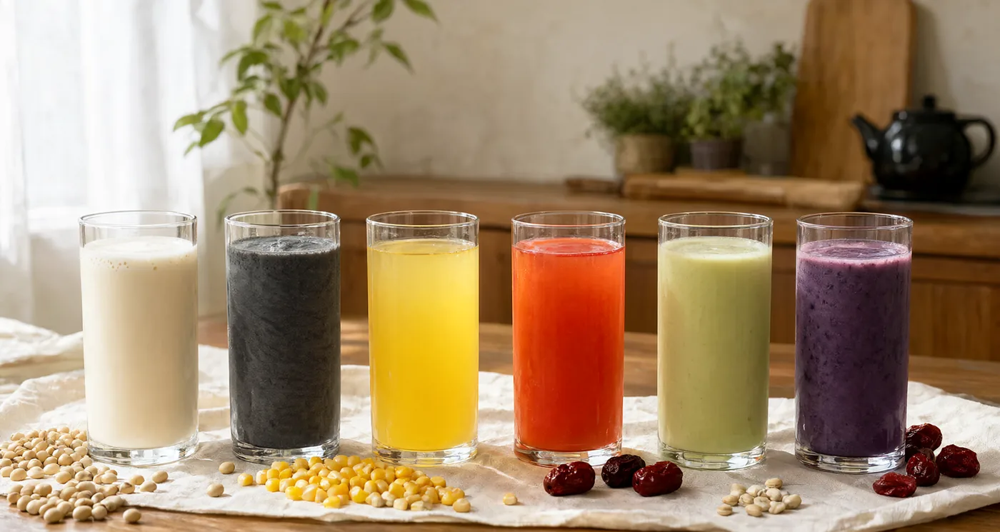

The Recipe Library
六十款，
按心情挑一杯。
有 15 款来自你收藏的截图，原方水 600–800 ml，偏浓稠；其余按日常比例补齐。点开任意一张卡片，能看完整的食材、步骤和一条“一杯的经验”。
怎么用这个库
先按类型筛，再按口味挑。豆浆类可以继续细分到六个流派；“家藏”标记的是你带过来的配方，一个字都没改。

共 60 款配方
配方是起点，不是答案。水多 50 毫升、糖少 5 克，都是你自己的版本。—— 浆造所 · 使用说明